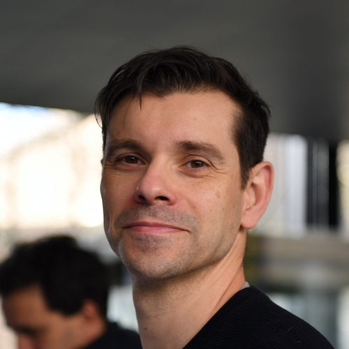

Dr. Gabriel A.D. Lopes is an AI, robotics and control specialist. Currently he works at Caspar.ai in the Netherlands. From 2016 to 2019 he has worked at RRC Robotics. From 2009 to 2016, Dr. Lopes was an Assistant Professor at the Delft Center for Systems and Control, Delft University of Technology, NL. He received a “Licenciatura” degree in Aerospace
Engineering at the Instituto Superior Tecnico, Universidade Tecnica de Lisboa, Portugal and MSc and PhD degrees in Electrical Engineering and Computer Science from the University of Michigan. In 2007, he was a visiting scholar at
the Grasp lab, University of Pennsylvania, USA. His interests include robotics, dynamical
systems, nonlinear control, machine learning, software architectures, and many other topics.
Robotics Language
Amazon ReMARS conference 2019
AWS case study for LEA
Journals
- J1. Mohammad Shahbazi, Robert Babǔska, and Gabriel A. D. Lopes. Unified modeling and control of walking and running on the spring-loaded inverted pendulum. Conditionally accepted to IEEE Transactions on Robotics, 2016
- J2. Hamidreza Modares, Subramanya P. Nageshrao, Gabriel A. D. Lopes, Robert Babǔska, and Frank L. Lewis. Optimal model-free output synchronization of heterogeneous systems using off-policy reinforcement learning. Accepted to: Automatica, 2016
- J3. A.A. Alvarez Cabrera, Gabriel A. D. Lopes, and T. Tomiyama. An architecture-level specification for automated supervisory controller design. Journal of Integrated Design and Process Science Special issue on: Design Of Multidisciplinary Cyber Physical Systems, 19(3):55–76, 2016
- J4. Subramanya P. Nageshrao, Gabriel A. D. Lopes, Dimitri Jeltsema, and Robert Babǔska. Port-hamiltonian systems in adaptive and learning control: A survey. IEEE Transactions on Automatic Control, 61(5):1–1, 2015
- J5. Olivier Sprangers, Robert Babǔska, Subramanya P. Nageshrao, and Gabriel A. D. Lopes. Reinforcement learning for port-hamiltonian systems. IEEE Transactions on Cybernetics, 45(5):1003–1013, 2015
- J6. Wouter J. Wolfslag, Michiel C. Plooij, Wouter Caarls, Sander van Weperen, and Gabriel A. D. Lopes. Dissipatively actuated manipulation. Control Engineering Practice, 34:68–76, 2015
- J7. Ke-Jung Huang, Shen-Chiang Chen, Haldun Komsuoglu, Gabriel A. D. Lopes, Jonathan Clark, and Pei-Chun Lin. Design and performance evaluation of a bio-inspired and single- motor-driven hexapod robot with dynamical gaits. Journal of Mechanisms and Robotics, 7(3):031.017, 2015
- J8. Esmaeil Najafi, Robert Babǔska, and Gabriel A. D. Lopes. Learning sequential composition control. IEEE Transactions on Cybernetics, PP(99), 2015
- J9. Gabriel A. D. Lopes, Bart Kersbergen, Ton van den Boom, Bart De Schutter, and Robert Babǔska. Modeling and control of legged locomotion via switching max-plus models. IEEE Transactions on Robotics, 30(3):652–665, 2014
- J10. Gabriel A. D. Lopes, Bart Kersbergen, Bart De Schutter, Ton van den Boom, and Robert Babǔska. Synchronization of a class of cyclic discrete-event systems describing legged locomotion. Discrete Event Dynamic Systems, pages 1–37, 2014
- J11. Subramanya P. Nageshrao, Gabriel A. D. Lopes, Dimitri Jeltsema, and Robert Babǔska. Passivity-based reinforcement learning control of a 2-dof manipulator arm. Mechatronics, 24(8):1001–1007, 2014
- J12. Ivo Grondman, Lucian Busoniu, Gabriel A. D. Lopes, and Robert Babǔska. A survey of actor-critic reinforcement learning: Standard and natural policy gradients. IEEE Transac- tions on Systems, Man, and Cybernetics, Part C: Applications and Reviews, 42(6):1291– 1307, 2012
- J13. Gabriel A. D. Lopes and Daniel E. Koditschek. Visual servoing for nonholonomically constrained three degree of freedom kinematic systems. International Journal of Robotics Research, 26(7):715–736, 2007
- J14. Gabriel A. D. Lopes and Daniel E. Koditschek. Level sets and stable manifold approxima- tions for perceptually driven nonholonomically constrained navigation. Journal Advanced Robotics, 19(10):1081–1096, 2005
- J15. Jorge Ambrósio, Gabriel A. D. Lopes, José Costa, and João Abrantes. Spatial reconstruc- tion of the human motion based on images of a single camera. Journal of Biomechanics, 34(9):1217–1221, 2001
- J16. Jorge Ambrósio, João Abrantes, and Gabriel A. D. Lopes. Spatial reconstruction of human motion by means of a single camera and a biomechanical model. Human Movement Science, 20(6):829–851, 2001
Papers in edited Books
- B1. Suzanne Weller, Joost Broekens, and Gabriel A. D. Lopes. The effect of gravity on per- ceived affective quality of robot movement. In Abe and Laumond, editors, Dance Notations and Robot Motion, Tracts in Advanced Robotics (STAR). Springer, 2015
- B2. Gabriel A. D. Lopes, Esmaeil Najafi, Subramanya P. Nageshrao, and Robert Babǔska. Learning complex behaviors via sequential composition and passivity-based control. In Busoniu and Levente, editors, Visual Perception and Intelligent Control for Single and Multiple Robots. Springer, 2015
- B3. Gabriel A. D. Lopes. Abstractions for legged locomotion. In Kozlowski, Tokhi, and Virk, editors, Mobile Service Robots. World Scientific, 2014
- B4. Gabriel A. D. Lopes and Daniel E. Koditschek. Navigation functions for dynamical, non- holonomically constrained mechanical systems. In Arimoto, editor, Advances in Robot Control, pages 135–155. Springer Berlin Heidelberg, 2006
- B5. Jorge Ambrósio, Gabriel A. D. Lopes, and Miguel Silva. Reconstruction of the Spatial Motion of Biomechanical Systems by Means of Computer Vision and Multibody Dynamics, chapter Advances in Multibody Systems and Mechatronics. Gerhard-Mercator-Universität Duisburg, 1999
Conference Proceedings and Workshops
- C1. Paolo Forni, Gabriel A. D. Lopes, and Dimitri Jeltsema. Adaptive trajectory tracking and rejection of sinusoidal disturbances with unknown frequencies for uncertain mechanical systems. In Proceedings of the IEEE Conference on Decision and Control, 2015
- C2. Paolo Forni, Dimitri Jeltsema, and Gabriel A. D. Lopes. Port-hamiltonian formulation of rigid-body attitude control. In Proceedings of the IFAC Workshop on Lagrangian and Hamiltonian Methods for Nonlinear Control, 2015
- C3. Subramanya P. Nageshrao, Gabriel A. D. Lopes, Dimitri Jeltsema, and Robert Babǔska. Control by interconnection of a manipulator arm using reinforcement learning. In Pro- ceedings of the IEEE Multi-Conference on Systems and Control, 2015
- C4. Mohammad Shahbazi, Robert Babǔska, and Gabriel A. D. Lopes. Analytical approxima- tion for the double-stance phase of a walking robot. In Proceedings of the IEEE Conference on Robotics and Automation, pages 5754–5760, 2015
- C5. Mohammad Shahbazi and Gabriel A. D. Lopes. A max-plus based synchronization con- troller for multiple spring-mass hoppers. In Proceedings of the IEEE Conference on Deci- sion and Control, 2015
- C6. Esmaeil Najafi, Robert Babǔska, and Gabriel A. D. Lopes. An application of sequential composition control to cooperative systems. In Proceedings of the International Workshop on Robot Motion and Control. IEEE, 2015
- C7. Subramanya P. Nageshrao, Gabriel A. D. Lopes, Dimitri Jeltsema, and Robert Babǔska. Interconnection and damping assignment control via reinforcement learning. In Proceedings of the IFAC World Congress, volume 19, pages 1760–1765, 2014
- C8. Mohammad Shahbazi, Gabriel A. D. Lopes, and Robert Babǔska. Automated transitions between walking and running in legged robots. In Proceedings of the IFAC World Congress, volume 19, pages 2171–2176, 2014
- C9. Esmaeil Najafi, Gabriel A. D. Lopes, Subramanya P. Nageshrao, and Robert Babǔska. Rapid learning in sequential composition control. In Proceedings of the IEEE Conference on Decision and Control, pages 5171–5176, 2014
- C10. Esmaeil Najafi, Gabriel A. D. Lopes, and Robert Babǔska. Balancing a legged robot using state-dependent Riccati equation control. In Proceedings of the IFAC World Congress, volume 19, pages 2177–2182, 2014
- C11. Gabriel A. D. Lopes and Fankai Zhang. Design and sensing of a flexible robot leg. In Proceedings of the IEEE/RSJ International Conference on Intelligent Robots and Systems, pages 4072–4077, 2013
- C12. Ton van den Boom, Gabriel A. D. Lopes, and Bart De Schutter. A modeling framework for model predictive scheduling using switching max-plus linear models. In Proceedings of the IEEE Conference on Decision and Control, pages 5456–5461, 2013
- C13. Mohammad Shahbazi, Gabriel A. D. Lopes, and Robert Babǔska. Observer-based postural balance control for humanoid robots. In Proceedings of the IEEE International Conference on Robotics and Biomimetics, pages 891–896, 2013
- C14. Esmaeil Najafi, Gabriel A. D. Lopes, and Robert Babǔska. Reinforcement learning for sequential composition control. In Proceedings of the IEEE Conference on Decision and Control, pages 7265–7270, 2013
- C15. Fankai Zhang, Gabriel A. D. Lopes, and Robert Babǔska. Stiffness and damping scheduling for legged locomotion. In Proceedings of the IEEE International Conference on Robotics and Biomimetics, pages 1801–1806, 2013
- C16. Gabriel A. D. Lopes, Bart De Schutter, and Ton van den Boom. On the synchronization of cyclic discrete-event systems. In Proceedings of the IEEE Conference on Decision and Control, pages 5810–5815, 2012
- C17. Maarten Vaandrager, Robert Babǔska, Lucian Busoniu, and Gabriel A. D. Lopes. Im- itation learning with non-parametric regression. In IEEE International Conference on Automation Quality and Testing Robotics, pages 91–96, 2012
- C18. Gabriel A. D. Lopes, Bart Kersbergen, Ton van den Boom, Bart De Schutter, and Robert Babǔska. On the eigenstructure of a class of max-plus linear systems. In Proceedings of the IEEE Conference on Decision and Control, pages 1823–1828, 2011
- C19. Bart Kersbergen, Gabriel A. D. Lopes, Ton van den Boom, Bart De Schutter, and Robert Babǔska. Optimal gait switching for legged locomotion. In Proceedings of the IEEE/RSJ International Conference on Intelligent Robots and Systems, pages 2729–2734, 2011
- C20. David van der Lijn, Gabriel A. D. Lopes, and Robert Babǔska. Motion estimation based on predator/prey vision. In Proceedings of the IEEE/RSJ International Conference on Intelligent Robots and Systems, pages 3435–3440, 2010
- C21. Gabriel A. D. Lopes, Ton van den Boom, Bart De Schutter, and Robert Babǔska. Modeling and control of legged locomotion via switching max-plus systems. In Proc. of the Int. Workshop on Discrete Event Systems, pages 392–397, 2010
- C22. Gabriel A. D. Lopes, Robert Babǔska, Bart De Schutter, and Ton van den Boom. Switch- ing max-plus models for legged locomotion. In Proceedings of the IEEE International Conference on Robotics and Biomimetics, pages 221–226, 2009
- C23. Maarten Vaandrager, Robert Babǔska, Lucian Busoniu, and Gabriel A. D. Lopes. Model- based imitation for learning control. In Philips Conference on Applications of Control Technology, pages 83–87, 2009
- C24. Gabriel A. D. Lopes and Daniel E. Koditschek. Level sets and stable manifold approxi- mations for perceptually driven nonholonomically constrained navigation. In Proceedings of the IEEE/RSJ International Conference on Intelligent Robots and Systems, volume 2, pages 1481–1486, 2004
- C25. Joel Weingarten, Gabriel A. D. Lopes, Martin Buehler, Richard E. Groff, and Daniel E. Koditschek. Automated gait adaptation for legged robots. In Proceedings of the IEEE Conference on Robotics and Automation, volume 3, pages 2153–2158, 2004
- C26. Gabriel A. D. Lopes and Daniel E. Koditschek. Visual registration and navigation using planar features. In Proceedings of the IEEE Conference on Robotics and Automation, volume 3, pages 3935–3940, 2003
- C27. Noah J Cowan, Gabriel A. D. Lopes, and Daniel E. Koditschek. Rigid body visual servo- ing using navigation functions. In Proceedings of the IEEE Conference on Decision and Control, volume 4, pages 3920–3926, 2000
- C28. Jorge Ambrósio, Miguel Silva, and Gabriel A. D. Lopes. Reconstrucão do movimento humano e dinˆamica inversa utilizando ferramentas numéricas baseadas em sistemas mul- ticorpo. In Proceedings of the IV Congreso de Métodos Numéricos en Ingeniería, Sevilha, pages 7–10, 1999
- C29. Jorge Ambrósio, Gabriel A. D. Lopes, and José Costa. Human spatial attitude control by means of zero momentum turns. In DYCONS99 Dynamics and Control of Multibody Systems, Chateau Laurier, Ottawa, Canada, 1999
- C30. Gabriel A. D. Lopes, José Costa, Jorge Ambrósio, and João Abrantes. Three-dimensional reconstruction of the human motion based on images from a single camera. In Hartmut Riheb, editor, Proceedings of XVI Symposium on Biomechanics in Sports, Konstanz, Germany, 1998
PhD Thesis
Gabriel A. D. Lopes. Perception based navigation for underactuated robots. PhD thesis, University of Michigan, 2008